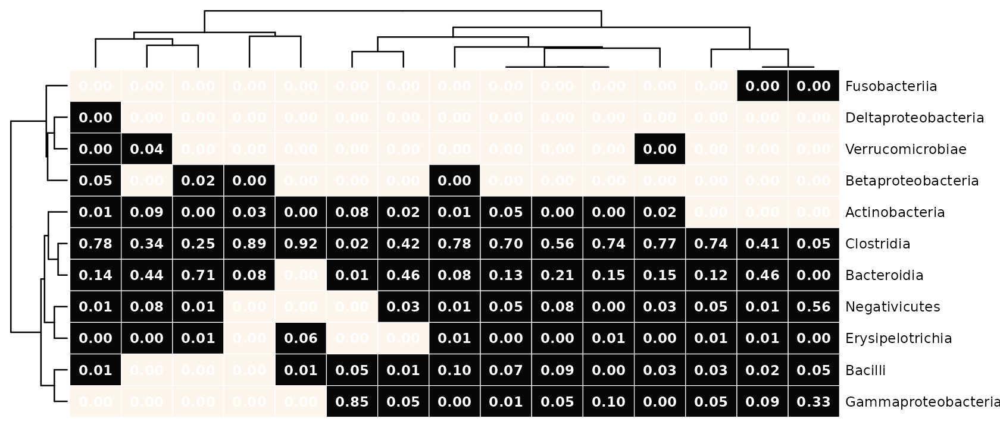
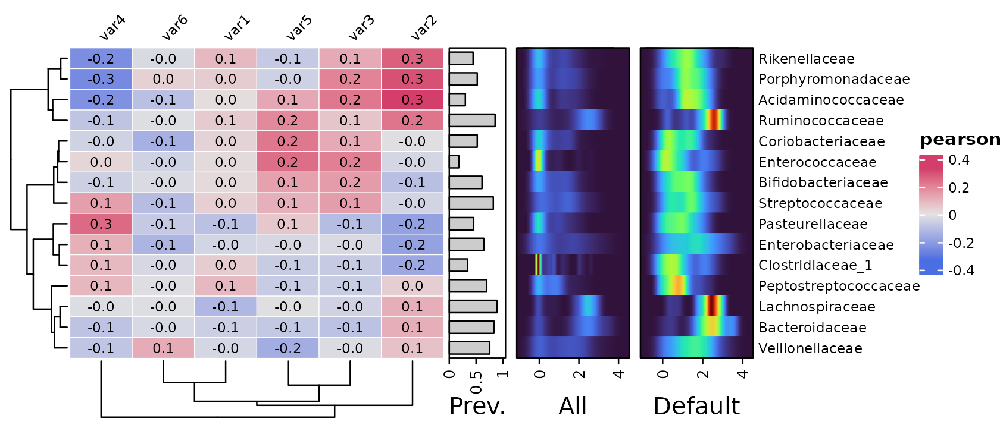
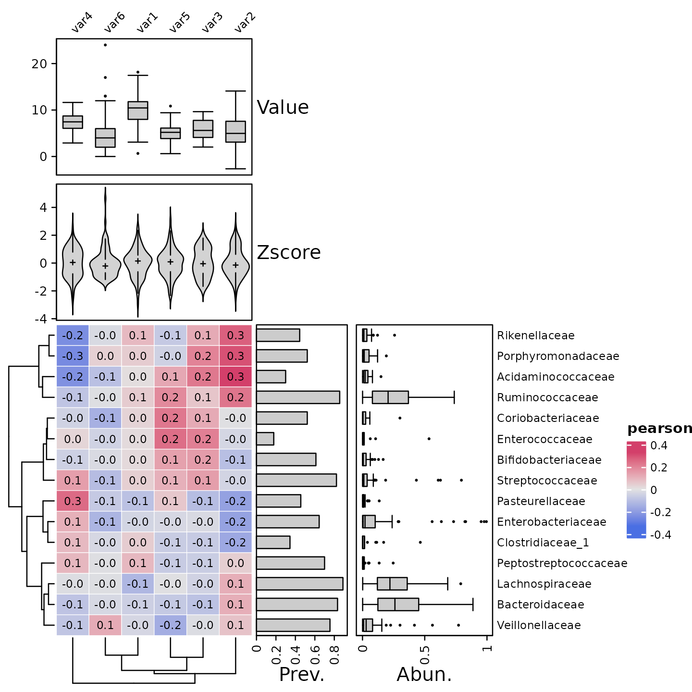
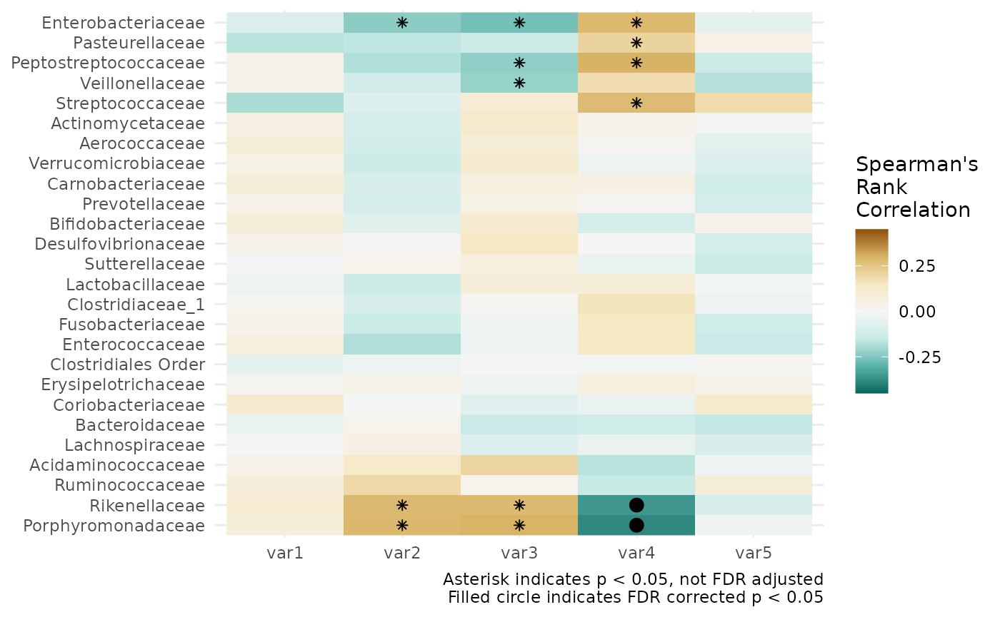

This article will show you how to plot annotated correlation and microbial composition heatmaps with microViz.
Setup
library(dplyr)
#>
#> Attaching package: 'dplyr'
#> The following objects are masked from 'package:stats':
#>
#> filter, lag
#> The following objects are masked from 'package:base':
#>
#> intersect, setdiff, setequal, union
library(phyloseq)
library(microViz)
#> microViz version 0.10.3 - Copyright (C) 2022 David Barnett
#> ! Website: https://david-barnett.github.io/microViz
#> ✔ Useful? For citation details, run: `citation("microViz")`
#> ✖ Silence? `suppressPackageStartupMessages(library(microViz))`First we’ll get some OTU abundance data from inflammatory bowel disease patients and controls from the corncob package.
data("ibd_phylo", package = "corncob")
ibd_phylo
#> phyloseq-class experiment-level object
#> otu_table() OTU Table: [ 36349 taxa and 91 samples ]
#> sample_data() Sample Data: [ 91 samples by 15 sample variables ]
#> tax_table() Taxonomy Table: [ 36349 taxa by 7 taxonomic ranks ]Remove the mostly unclassified species-level data, drop the rare taxa and fix the taxonomy of the rest. Also drop patients with unclassified IBD.
psq <- ibd_phylo %>%
tax_mutate(Species = NULL) %>%
tax_filter(min_prevalence = 5) %>%
tax_fix() %>%
ps_filter(DiseaseState != "IBDundef")
psq
#> phyloseq-class experiment-level object
#> otu_table() OTU Table: [ 1599 taxa and 90 samples ]
#> sample_data() Sample Data: [ 90 samples by 15 sample variables ]
#> tax_table() Taxonomy Table: [ 1599 taxa by 6 taxonomic ranks ]Microbiome heatmaps
Visualise the microbial composition of your samples.
The samples and taxa are sorted by similarity. (By default this uses hierarchical clustering with optimal leaf ordering, using euclidean distances on the transformed data).
In this example we use a “compositional” transformation, so the Class abundances are shown as proportions of each sample.
psq %>%
tax_transform("compositional", rank = "Class") %>%
comp_heatmap()
#> Registered S3 method overwritten by 'seriation':
#> method from
#> reorder.hclust vegan
You can easily swap to a symmetrical colour palette for transformations like “clr” or “standardize”. This is the default symmetrical palette but you can pick from many.
psq %>%
tax_transform("clr", rank = "Family") %>%
comp_heatmap(colors = heat_palette(sym = TRUE), name = "CLR")
Annotating taxa
psq %>%
tax_transform("compositional", rank = "Class") %>%
comp_heatmap(tax_anno = taxAnnotation(
Prev. = anno_tax_prev(bar_width = 0.3, size = grid::unit(1, "cm"))
))Legend positioning
Positioning the heatmap legend at the bottom is possible. You can
assign the heatmap to a name and then call ComplexHeatmap’s
draw function.
heat <- psq %>%
tax_transform("compositional", rank = "Class") %>%
comp_heatmap(
tax_anno = taxAnnotation(
Prev. = anno_tax_prev(bar_width = 0.3, size = grid::unit(1, "cm"))),
heatmap_legend_param = list(
at = 0:5 / 5,
direction = "horizontal", title_position = "leftcenter",
legend_width = grid::unit(4, "cm"), grid_height = grid::unit(5, "mm")
)
)
ComplexHeatmap::draw(
object = heat, heatmap_legend_side = "bottom",
adjust_annotation_extension = FALSE
)Annotating samples
Group membership
2 different methods for annotating each sample’s values of categorical metadata are possible.
anno_sample()cannot have borders around each cell, but automatically adds a legend.anno_sample_cat()can have cell borders, but requires an extra step to draw a legend
cols <- distinct_palette(n = 3, add = NA)
names(cols) <- unique(samdat_tbl(psq)$DiseaseState)
psq %>%
tax_transform("compositional", rank = "Class") %>%
comp_heatmap(
tax_anno = taxAnnotation(
Prev. = anno_tax_prev(bar_width = 0.3, size = grid::unit(1, "cm"))
),
sample_anno = sampleAnnotation(
State1 = anno_sample("DiseaseState"),
col = list(State1 = cols), border = FALSE,
State2 = anno_sample_cat("DiseaseState", col = cols)
)
) 
Let’s try drawing equivalent categorical annotations by two methods.
Both methods can draw annotations with borders and no individual boxes.
This style suits heatmaps with no gridlines
(i.e. grid_col = NA).
In the example below we have suppressed row ordering with
cluster_rows = FALSE, and added spaces between taxa by
splitting at every row with row_split = 1:11, which are
both ComplexHeatmap::Heatmap() arguments.
psqC <- psq %>% tax_transform("compositional", rank = "Class")
htmp <- psqC %>%
comp_heatmap(
grid_col = NA,
cluster_rows = FALSE, row_title = NULL,
row_split = seq_len(ntaxa(ps_get(psqC))),
tax_anno = taxAnnotation(
Prev. = anno_tax_prev(bar_width = 0.9, size = grid::unit(1, "cm"), border = F)
),
sample_anno = sampleAnnotation(
# method one
State1 = anno_sample("DiseaseState"),
col = list(State1 = cols), border = TRUE,
# method two
State2 = anno_sample_cat(
var = "DiseaseState", col = cols, box_col = NA, border_col = "black",
legend_title = "State2"
)
)
)
htmp %>% ComplexHeatmap::draw(
annotation_legend_list = attr(htmp, "AnnoLegends")
)You can also manually draw a legend with the convenience function
anno_cat_legend().
grid::grid.newpage()
anno_cat_legend(
col = c("a level" = "red", "another level" = "blue", c = "white"),
border = "black", gap = grid::unit(2, "cm"), ncol = 3
) %>%
ComplexHeatmap::draw()
Numbering cells
If you have fewer samples (and taxa) you might like to label the cells with their values. By default, the raw counts are shown.
psq %>%
tax_transform("compositional", rank = "Class") %>%
comp_heatmap(samples = 1:15, numbers = heat_numbers())You can easily change to showing the same values as the colours by
setting numbers_use_counts = FALSE, and you can/should
change the number of decimals shown too.
psq %>%
tax_transform("compositional", rank = "Class") %>%
comp_heatmap(
samples = 1:15, numbers_use_counts = FALSE,
numbers = heat_numbers(decimals = 2)
)
The numbers can any transformation of counts, irrespective of what transformations were used for the colours, or seriation.
psq %>%
tax_transform("binary", undetected = 0, rank = "Class") %>%
comp_heatmap(
samples = 1:15, numbers_use_counts = TRUE, numbers_trans = "compositional",
numbers = heat_numbers(decimals = 2, col = "white"),
show_heatmap_legend = FALSE
)To demonstrate that coloration, numbering and seriation can all use different transformations of the original count data, the example below we specifies seriating the taxa and samples using the same numerical values used for the numbers transformation, not the colours, which are just presence/absence!
psq %>%
tax_transform("binary", undetected = 0, rank = "Class") %>%
comp_heatmap(
samples = 1:15,
sample_ser_counts = TRUE, sample_ser_trans = "compositional",
tax_ser_counts = TRUE, tax_ser_trans = "compositional",
numbers_use_counts = TRUE, numbers_trans = "compositional",
numbers = heat_numbers(decimals = 2, col = "white"),
show_heatmap_legend = FALSE
)
Correlation heatmaps
Correlation heatmaps can be a nice way to quickly assess patterns of associations between numerical variables in your dataset, such as microbial abundances and other metadata.
Let’s make some fake numeric variables to exemplify this.
set.seed(111) # ensures making same random variables every time!
psq <- psq %>%
ps_arrange(ibd) %>%
ps_mutate(
var1 = rnorm(nsamples(psq), mean = 10, sd = 3),
var2 = c(
rnorm(nsamples(psq)*0.75, mean = 4, sd = 2),
rnorm(1 + nsamples(psq)/4, mean = 9, sd = 3)
),
var3 = runif(nsamples(psq), 2, 10),
var4 = rnorm(nsamples(psq), mean = 100 + nsamples(psq):0, sd = 20) / 20,
var5 = rnorm(nsamples(psq), mean = 5, sd = 2),
var6 = rnbinom(nsamples(psq), size = 1:75/10, mu = 5)
)Calculating correlations
By default, the cor_heatmap function will correlate all
taxa to all numerical sample data, using pearson correlation method.
psq %>%
tax_agg("Family") %>%
cor_heatmap(vars = c("var1", "var2", "var3", "var4", "var5", "var6"))It’s easy to change to a different method, i.e. spearman’s rank correlation or kendall’s tau, which will be reflected in the legend title. We will also specify to use only the 15 most abundant taxa, by maximum count, just to make these tutorial figures a little more compact!
psq %>%
tax_agg("Family") %>%
cor_heatmap(
taxa = tax_top(psq, 15, by = max, rank = "Family"),
vars = paste0("var", 1:6), cor = "spearman"
)
Older versions of microViz cor_heatmap had a
tax_transform argument. But for flexibility, you must now
transform your taxa before passing the psExtra object
to cor_heatmap.
Here we have transformed our taxa with the “clr” or centered-log-ratio transformation prior to correlating. Notice that the annotations stay on the same scale, as by default the annotation functions extract the stored counts data from the psExtra input, not the transformed data.
psq %>%
tax_agg("Family") %>%
tax_transform("clr", zero_replace = "halfmin") %>%
cor_heatmap(
taxa = tax_top(psq, 15, by = max, rank = "Family"),
vars = paste0("var", 1:6)
)Let’s transform and scale the taxon abundances before correlating.
psq %>%
tax_agg("Family") %>%
tax_transform("clr", zero_replace = "halfmin") %>%
cor_heatmap(
taxa = tax_top(psq, 15, by = max, rank = "Family"),
vars = paste0("var", 1:6)
)Taxon annotations
As seen in the previous plots taxa are annotated by default with prevalence and relative abundance.
You can transform the taxa for the abundance annotation. The
trans and zero_replace arguments are sent to
tax_transform().
psq %>%
tax_agg("Family") %>%
cor_heatmap(
taxa = tax_top(psq, 15, by = max, rank = "Family"),
vars = paste0("var", 1:6),
tax_anno = taxAnnotation(
Prev. = anno_tax_prev(ylim = 0:1),
Log10. = anno_tax_box(trans = "log10", zero_replace = "halfmin")
)
)
You can do multiple transformations and or scaling by supplying a function, that takes a psExtra or phyloseq object, transforms it, and returns it.
psq %>%
tax_agg("Family") %>%
cor_heatmap(
taxa = tax_top(psq, 15, by = max, rank = "Family"),
vars = paste0("var", 1:6),
tax_anno = taxAnnotation(
Log2 = anno_tax_density(
joyplot_scale = 2, gp = grid::gpar(fill = "black", alpha = 0.2),
trans = "log2", zero_replace = 1
),
`prop Log2` = anno_tax_density(
joyplot_scale = 1.5, gp = grid::gpar(fill = "black", alpha = 0.2),
trans = function(ps) {
ps %>%
tax_transform("compositional", zero_replace = 1) %>%
tax_transform("log2", chain = TRUE)
}
)
)
)Note that by default the relative abundance is shown only for samples
where the taxon is detected! You can include values for all samples for
all taxa by setting only_detected = FALSE.
Let’s try this with a heatmap-style density plot annotation. We’ll replace zeroes with ones for an interpretable minimum value on the plot.
We’ll compare it side-by-side with the default setting of showing only distribution of values above the detection threshold.
For zero-inflated microbiome data, showing prevalence and “abundance when detected” often seems like a more informative annotation.
psq %>%
tax_agg("Family") %>%
cor_heatmap(
taxa = tax_top(psq, 15, by = max, rank = "Family"),
vars = paste0("var", 1:6),
tax_anno = taxAnnotation(
Prev. = anno_tax_prev(size = grid::unit(10, "mm"), ylim = 0:1),
All = anno_tax_density(
size = grid::unit(20, "mm"),
trans = "log10", zero_replace = 1,
heatmap_colors = viridisLite::turbo(n = 15),
type = "heatmap", only_detected = FALSE
),
Default = anno_tax_density(
size = grid::unit(20, "mm"),
trans = "log10", zero_replace = 1,
heatmap_colors = viridisLite::turbo(n = 15),
type = "heatmap", only_detected = TRUE
)
)
)Sorting
By default, rows and columns are sorted using hierarchical clustering
with optimal leaf ordering "OLO_ward". You can use any
valid method from the seriation package. You can suppress
ordering by using seriation_method = "Identity". By default
this also suppresses column ordering, so you can set
seriation_method_col = OLO_ward to keep ordering.
psq %>%
tax_agg("Family") %>%
tax_sort(by = prev, at = "Family") %>%
cor_heatmap(
seriation_method = "Identity",
seriation_method_col = "OLO_ward",
taxa = tax_top(psq, 15, by = max, rank = "Family"),
vars = paste0("var", 1:6),
tax_anno = taxAnnotation(
Prev. = anno_tax_prev(ylim = 0:1),
CLR = anno_tax_box(trans = "clr", zero_replace = "halfmin")
)
)
Taxa annotation side
You can easily put the taxa annotations on another of the heatmap
with e.g. taxa_side = "left"
psq %>%
tax_agg("Family") %>%
tax_sort(by = prev, at = "Family") %>%
cor_heatmap(
seriation_method = "Identity",
seriation_method_col = "OLO_ward",
taxa_side = "left",
taxa = tax_top(psq, 15, by = max, rank = "Family"),
vars = paste0("var", 1:6),
tax_anno = taxAnnotation(
Prev. = anno_tax_prev(ylim = 0:1),
CLR = anno_tax_box(trans = "clr", zero_replace = "halfmin")
)
)Or on the top or bottom is also possible, this will rotate the heatmap. Remember to swap the seriation method arguments around!
psq %>%
tax_agg("Family") %>%
tax_sort(by = prev, at = "Family") %>%
cor_heatmap(
seriation_method_col = "Identity", #swapped!
seriation_method = "OLO_ward", #swapped!
taxa_side = "top",
taxa = tax_top(psq, 15, by = max, rank = "Family"),
vars = paste0("var", 1:6),
tax_anno = taxAnnotation(
Prev. = anno_tax_prev(ylim = 0:1),
CLR = anno_tax_box(trans = "clr", zero_replace = "halfmin")
)
)Variable annotation
As well as annotating the taxa, you can also annotate the variables.
psq %>%
tax_agg("Family") %>%
cor_heatmap(
taxa = tax_top(psq, 15, by = max, rank = "Family"),
vars = paste0("var", 1:6),
var_anno = varAnnotation(
Value = anno_var_box(),
Zscore = anno_var_density(fun = scale, type = "violin")
)
)
Other stuff
Complicated stuff demonstrated down here, not necessarily useful.
Custom breaks and seriation
Two approaches to custom colour scale breaks. The first way is better, because the colour scale is interpolated through the default 11 colours, instead of only 5.
Transform data and customise only labels.
psq %>%
tax_transform("compositional", rank = "Class") %>%
tax_transform("log10", zero_replace = "halfmin", chain = TRUE) %>%
comp_heatmap(
tax_anno = taxAnnotation(
Prev. = anno_tax_prev(bar_width = 0.3, size = grid::unit(1, "cm"))
),
heatmap_legend_param = list(
labels = rev(c("100%", " 10%", " 1%", " 0.1%", "0.01%"))
)
)
This alternative way might be helpful in some cases, maybe… It
demonstrates that custom breaks can be set in
heat_palette().
# seriation transform
serTrans <- function(x) {
tax_transform(x, trans = "log10", zero_replace = "halfmin", chain = TRUE)
}
psq %>%
tax_transform("compositional", rank = "Class") %>%
comp_heatmap(
sample_ser_trans = serTrans, tax_ser_trans = serTrans,
colors = heat_palette(breaks = c(0.0001, 0.001, 0.01, 0.1, 1), rev = T),
tax_anno = taxAnnotation(
Prev. = anno_tax_prev(bar_width = 0.3, size = grid::unit(1, "cm"))
),
heatmap_legend_param = list(at = c(0.0001, 0.001, 0.01, 0.1, 1), break_dist = 1)
)
Session info
devtools::session_info()
#> ─ Session info ───────────────────────────────────────────────────────────────
#> setting value
#> version R version 4.2.2 (2022-10-31)
#> os Ubuntu 20.04.5 LTS
#> system x86_64, linux-gnu
#> ui X11
#> language en
#> collate C.UTF-8
#> ctype C.UTF-8
#> tz UTC
#> date 2022-11-18
#> pandoc 2.19.2 @ /usr/bin/ (via rmarkdown)
#>
#> ─ Packages ───────────────────────────────────────────────────────────────────
#> package * version date (UTC) lib source
#> ade4 1.7-20 2022-11-01 [1] RSPM
#> ape 5.6-2 2022-03-02 [1] RSPM
#> Biobase 2.56.0 2022-04-26 [1] Bioconductor
#> BiocGenerics 0.42.0 2022-04-26 [1] Bioconductor
#> biomformat 1.24.0 2022-04-26 [1] Bioconductor
#> Biostrings 2.64.1 2022-08-18 [1] Bioconductor
#> bitops 1.0-7 2021-04-24 [1] RSPM
#> bslib 0.4.1 2022-11-02 [1] RSPM
#> ca 0.71.1 2020-01-24 [1] RSPM
#> cachem 1.0.6 2021-08-19 [1] RSPM
#> callr 3.7.3 2022-11-02 [1] RSPM
#> circlize 0.4.15 2022-05-10 [1] RSPM
#> cli 3.4.1 2022-09-23 [1] RSPM
#> clue 0.3-62 2022-10-18 [1] RSPM
#> cluster 2.1.4 2022-08-22 [3] CRAN (R 4.2.2)
#> codetools 0.2-18 2020-11-04 [3] CRAN (R 4.2.2)
#> colorspace 2.0-3 2022-02-21 [1] RSPM
#> ComplexHeatmap 2.12.1 2022-08-09 [1] Bioconductor
#> crayon 1.5.2 2022-09-29 [1] RSPM
#> data.table 1.14.6 2022-11-16 [1] RSPM
#> desc 1.4.2 2022-09-08 [1] RSPM
#> devtools 2.4.5 2022-10-11 [1] RSPM
#> digest 0.6.30 2022-10-18 [1] RSPM
#> doParallel 1.0.17 2022-02-07 [1] RSPM
#> dplyr * 1.0.10 2022-09-01 [1] RSPM
#> ellipsis 0.3.2 2021-04-29 [1] RSPM
#> evaluate 0.18 2022-11-07 [1] RSPM
#> fansi 1.0.3 2022-03-24 [1] RSPM
#> fastmap 1.1.0 2021-01-25 [1] RSPM
#> foreach 1.5.2 2022-02-02 [1] RSPM
#> fs 1.5.2 2021-12-08 [1] RSPM
#> generics 0.1.3 2022-07-05 [1] RSPM
#> GenomeInfoDb 1.32.4 2022-09-06 [1] Bioconductor
#> GenomeInfoDbData 1.2.8 2022-11-14 [1] Bioconductor
#> GetoptLong 1.0.5 2020-12-15 [1] RSPM
#> ggplot2 3.4.0 2022-11-04 [1] RSPM
#> GlobalOptions 0.1.2 2020-06-10 [1] RSPM
#> glue 1.6.2 2022-02-24 [1] RSPM
#> gtable 0.3.1 2022-09-01 [1] RSPM
#> highr 0.9 2021-04-16 [1] RSPM
#> htmltools 0.5.3 2022-07-18 [1] RSPM
#> htmlwidgets 1.5.4 2021-09-08 [1] RSPM
#> httpuv 1.6.6 2022-09-08 [1] RSPM
#> igraph 1.3.5 2022-09-22 [1] RSPM
#> IRanges 2.30.1 2022-08-18 [1] Bioconductor
#> iterators 1.0.14 2022-02-05 [1] RSPM
#> jquerylib 0.1.4 2021-04-26 [1] RSPM
#> jsonlite 1.8.3 2022-10-21 [1] RSPM
#> knitr 1.40 2022-08-24 [1] RSPM
#> later 1.3.0 2021-08-18 [1] RSPM
#> lattice 0.20-45 2021-09-22 [3] CRAN (R 4.2.2)
#> lifecycle 1.0.3 2022-10-07 [1] RSPM
#> magrittr 2.0.3 2022-03-30 [1] RSPM
#> MASS 7.3-58.1 2022-08-03 [3] CRAN (R 4.2.2)
#> Matrix 1.5-1 2022-09-13 [3] CRAN (R 4.2.2)
#> matrixStats 0.62.0 2022-04-19 [1] RSPM
#> memoise 2.0.1 2021-11-26 [1] RSPM
#> mgcv 1.8-41 2022-10-21 [3] CRAN (R 4.2.2)
#> microbiome 1.18.0 2022-04-26 [1] Bioconductor
#> microViz * 0.10.3 2022-11-18 [1] local
#> mime 0.12 2021-09-28 [1] RSPM
#> miniUI 0.1.1.1 2018-05-18 [1] RSPM
#> multtest 2.52.0 2022-04-26 [1] Bioconductor
#> munsell 0.5.0 2018-06-12 [1] RSPM
#> nlme 3.1-160 2022-10-10 [3] CRAN (R 4.2.2)
#> permute 0.9-7 2022-01-27 [1] RSPM
#> phyloseq * 1.40.0 2022-04-26 [1] Bioconductor
#> pillar 1.8.1 2022-08-19 [1] RSPM
#> pkgbuild 1.3.1 2021-12-20 [1] RSPM
#> pkgconfig 2.0.3 2019-09-22 [1] RSPM
#> pkgdown 2.0.6 2022-07-16 [1] RSPM
#> pkgload 1.3.2 2022-11-16 [1] RSPM
#> plyr 1.8.8 2022-11-11 [1] RSPM
#> png 0.1-7 2013-12-03 [1] RSPM
#> prettyunits 1.1.1 2020-01-24 [1] RSPM
#> processx 3.8.0 2022-10-26 [1] RSPM
#> profvis 0.3.7 2020-11-02 [1] RSPM
#> promises 1.2.0.1 2021-02-11 [1] RSPM
#> ps 1.7.2 2022-10-26 [1] RSPM
#> purrr 0.3.5 2022-10-06 [1] RSPM
#> R6 2.5.1 2021-08-19 [1] RSPM
#> ragg 1.2.4 2022-10-24 [1] RSPM
#> RColorBrewer 1.1-3 2022-04-03 [1] RSPM
#> Rcpp 1.0.9 2022-07-08 [1] RSPM
#> RCurl 1.98-1.9 2022-10-03 [1] RSPM
#> registry 0.5-1 2019-03-05 [1] RSPM
#> remotes 2.4.2 2021-11-30 [1] RSPM
#> reshape2 1.4.4 2020-04-09 [1] RSPM
#> rhdf5 2.40.0 2022-04-26 [1] Bioconductor
#> rhdf5filters 1.8.0 2022-04-26 [1] Bioconductor
#> Rhdf5lib 1.18.2 2022-05-15 [1] Bioconductor
#> rjson 0.2.21 2022-01-09 [1] RSPM
#> rlang 1.0.6 2022-09-24 [1] RSPM
#> rmarkdown 2.18 2022-11-09 [1] RSPM
#> rprojroot 2.0.3 2022-04-02 [1] RSPM
#> Rtsne 0.16 2022-04-17 [1] RSPM
#> S4Vectors 0.34.0 2022-04-26 [1] Bioconductor
#> sass 0.4.2 2022-07-16 [1] RSPM
#> scales 1.2.1 2022-08-20 [1] RSPM
#> seriation 1.4.0 2022-10-21 [1] RSPM
#> sessioninfo 1.2.2 2021-12-06 [1] RSPM
#> shape 1.4.6 2021-05-19 [1] RSPM
#> shiny 1.7.3 2022-10-25 [1] RSPM
#> stringi 1.7.8 2022-07-11 [1] RSPM
#> stringr 1.4.1 2022-08-20 [1] RSPM
#> survival 3.4-0 2022-08-09 [3] CRAN (R 4.2.2)
#> systemfonts 1.0.4 2022-02-11 [1] RSPM
#> textshaping 0.3.6 2021-10-13 [1] RSPM
#> tibble 3.1.8 2022-07-22 [1] RSPM
#> tidyr 1.2.1 2022-09-08 [1] RSPM
#> tidyselect 1.2.0 2022-10-10 [1] RSPM
#> TSP 1.2-1 2022-07-14 [1] RSPM
#> urlchecker 1.0.1 2021-11-30 [1] RSPM
#> usethis 2.1.6 2022-05-25 [1] RSPM
#> utf8 1.2.2 2021-07-24 [1] RSPM
#> vctrs 0.5.1 2022-11-16 [1] RSPM
#> vegan 2.6-4 2022-10-11 [1] RSPM
#> viridisLite 0.4.1 2022-08-22 [1] RSPM
#> withr 2.5.0 2022-03-03 [1] RSPM
#> xfun 0.35 2022-11-16 [1] RSPM
#> xtable 1.8-4 2019-04-21 [1] RSPM
#> XVector 0.36.0 2022-04-26 [1] Bioconductor
#> yaml 2.3.6 2022-10-18 [1] RSPM
#> zlibbioc 1.42.0 2022-04-26 [1] Bioconductor
#>
#> [1] /home/runner/work/_temp/Library
#> [2] /opt/R/4.2.2/lib/R/site-library
#> [3] /opt/R/4.2.2/lib/R/library
#>
#> ──────────────────────────────────────────────────────────────────────────────